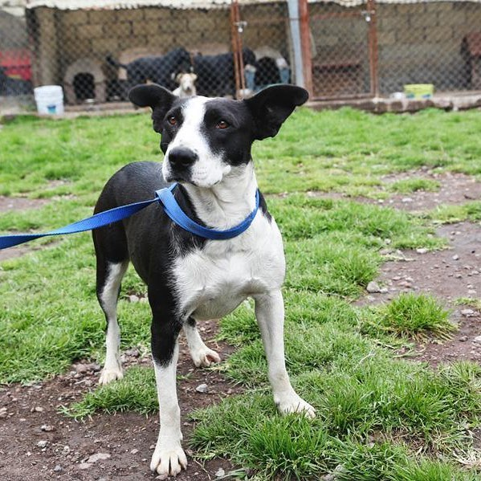

Nuestra historia

• Somos un refugio que sobrevive de donativos y ayuda de almas caritativas para alimentar más de 200 perritos abandonados.
• Amplios jardines, paseos, recesos, atención individualizada, cariño y supervisión continua para tu mejor amigo.
• Al momento tenemos más de 200 perros dentro de nuestras instalaciones y cuidamos de perros callejeros que habitan en los alrededores del refugio.
¡Visítanos!
Ponte en Contacto con nosotros y te recibiremos con los brazos abiertos.